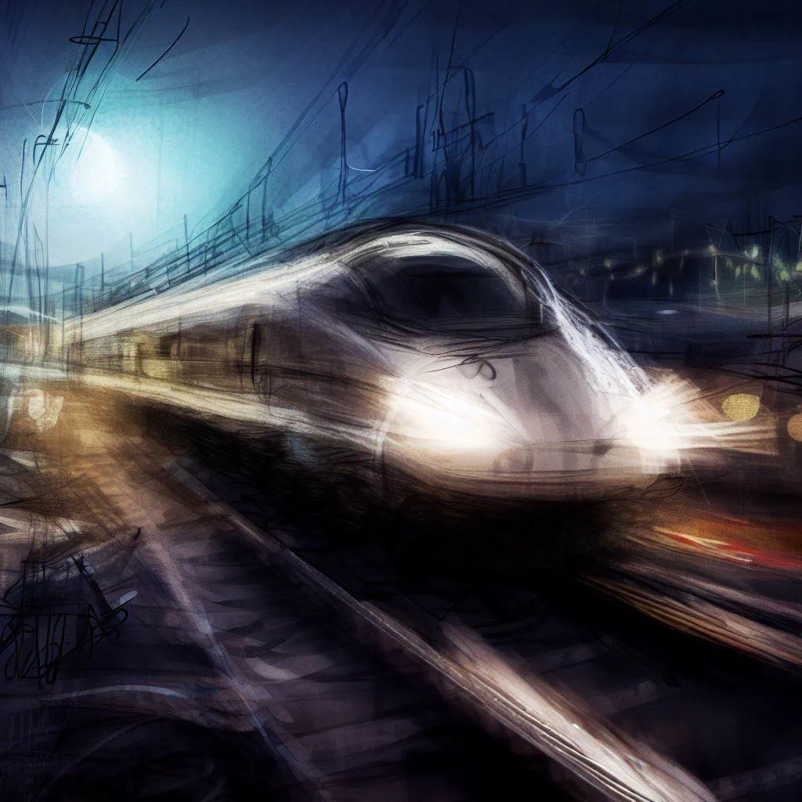
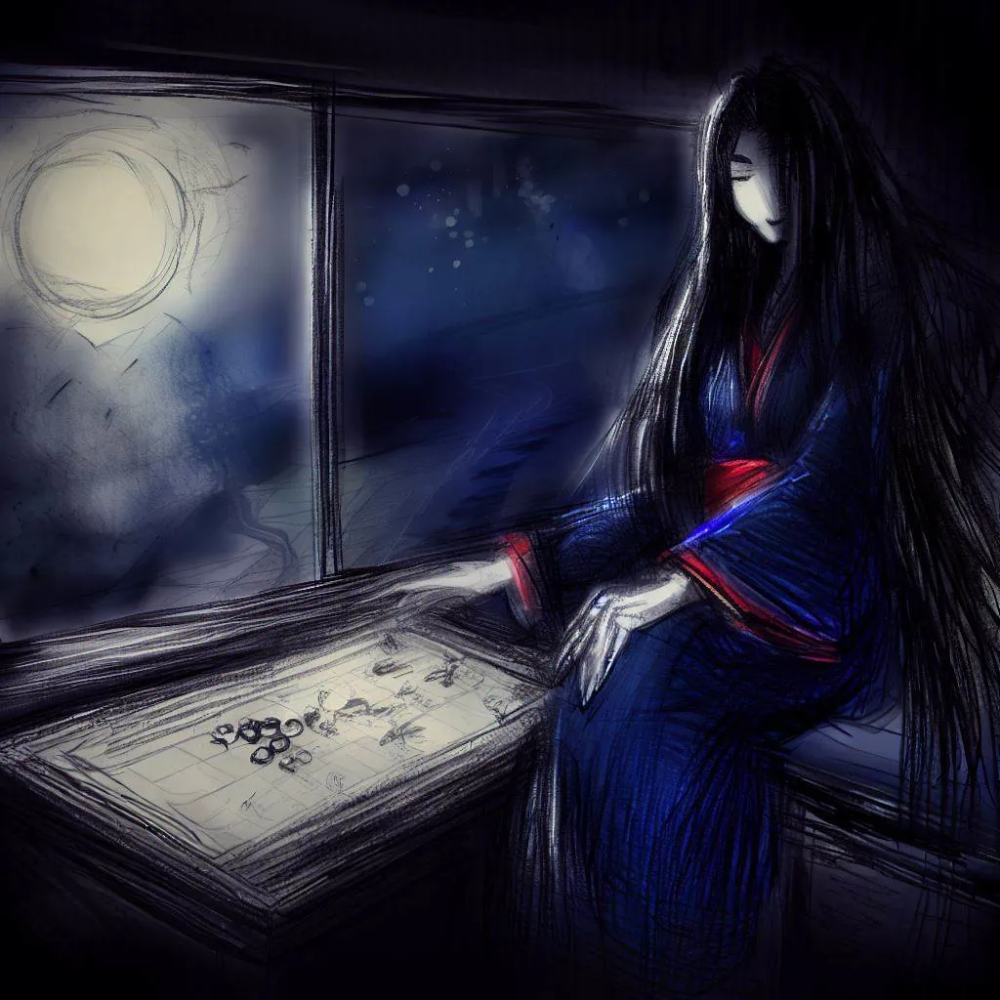
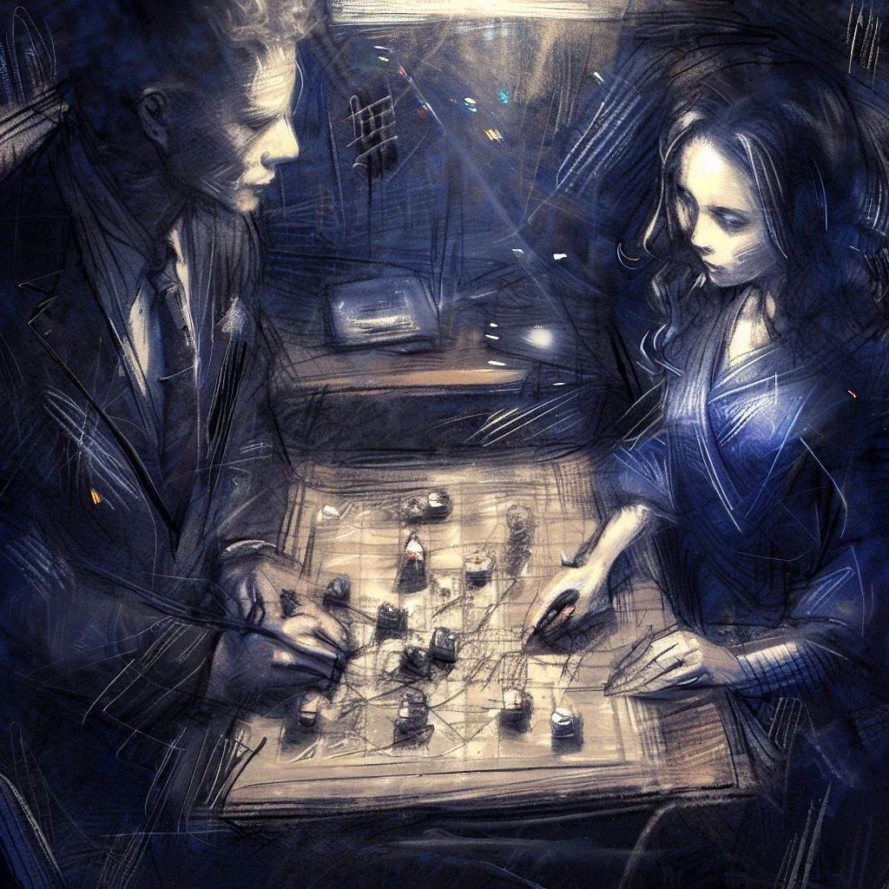
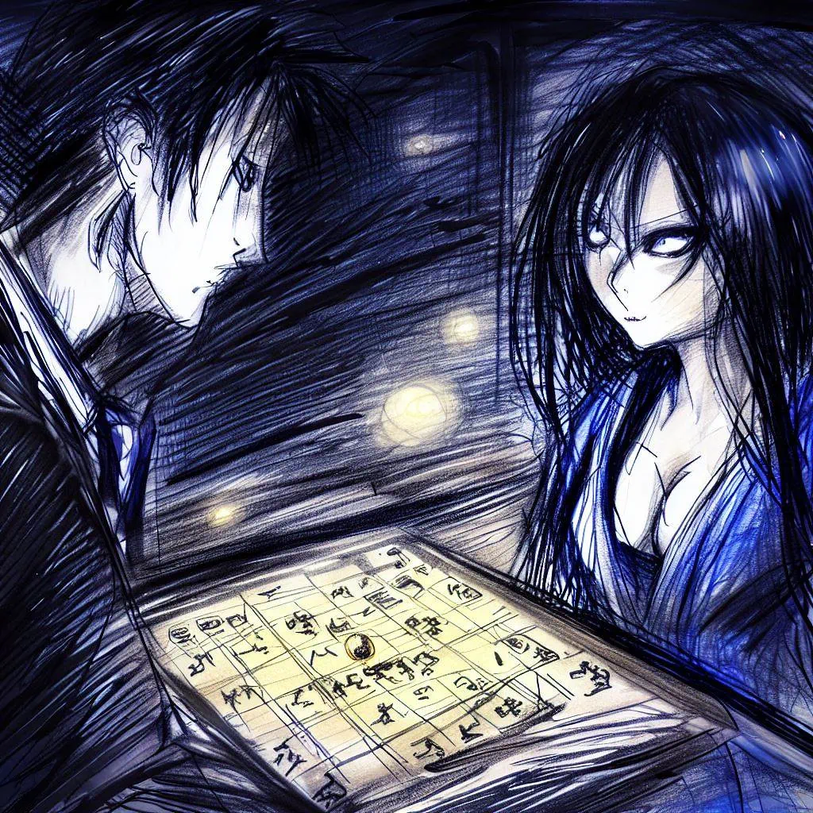
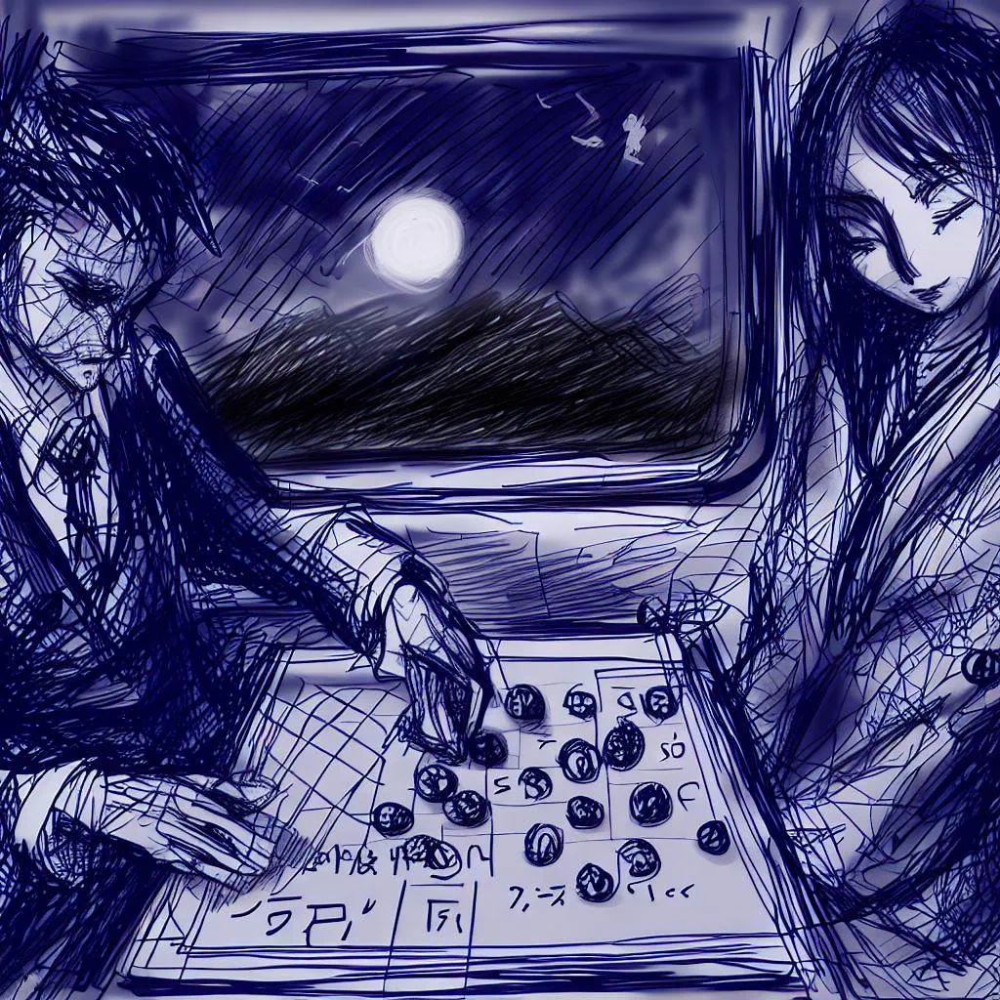
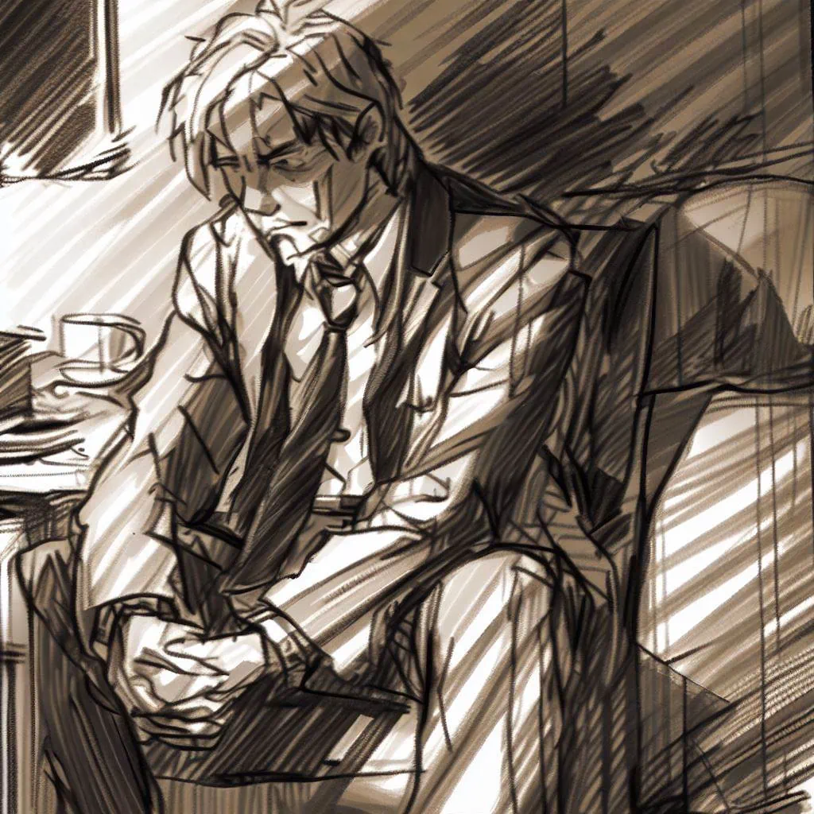

L'orgueil ou l'âme : Le sacrifice de Takeshi
Le Départ
La nuit était tombée sur la région du Kansai, et la pleine lune suspendue dans le ciel éclairait le paysage qui défilait à grande vitesse. Le Shinkansen, ce train à la pointe de la technologie, fendait l'air avec une grâce silencieuse, emmenant ses passagers vers Tokyo.

À bord, Takeshi, champion du monde de ōgi, s'était installé confortablement pour le long trajet. L'habitacle silencieux et le mouvement rythmé du train invitaient à la contemplation. Takeshi fixait le paysage à travers la fenêtre, laissant ses pensées vagabonder avec la campagne illuminée par la lueur argentée de la lune.
Dans le wagon presque silencieux, seul le doux ronronnement du train se faisait entendre, accompagné par le claquement régulier des rails qui semblaient jouer une douce mélodie hypnotique. Les reflets de la lune sur les rizières et les forêts donnaient au paysage un air de sérénité et de mystère.
Takeshi, habitué aux longs trajets et aux parties interminables de ōgi, savourait ces moments de tranquillité. Pour lui, ce voyage nocturne en train n'était qu'un prélude à une nouvelle compétition, une nouvelle ville, un nouvel adversaire.
Mais alors qu'il se perdait dans la contemplation du paysage nocturne, il était loin de se douter que son véritable défi de la soirée se trouverait non pas à Tokyo, mais à l'intérieur même de ce wagon.
L'étrangère
Takeshi fut sorti de ses rêveries par l'arrivée d'une nouvelle passagère. Elle était d'une beauté rare, avec des cheveux noirs comme le jais et des yeux envoûtants. Son kimono bleu nuit, orné de motifs délicats, contrastait avec la sobriété des autres passagers et attirait irrémédiablement l'attention.
La femme s'installa à côté de Takeshi, dans un mouvement fluide et élégant. Elle ne semblait pas le remarquer, perdue dans ses propres pensées. Ce ne fut que lorsqu'elle sortit un plateau de ōgi de son sac que Takeshi prit véritablement conscience de sa présence. La vue du jeu, brillant sous les lumières tamisées du wagon, attira son regard comme un aimant.

Takeshi observa la femme en silence, surpris. Il était inhabituel de rencontrer une autre personne partageant son amour pour le ōgi, surtout dans un train de nuit. Intrigué, il ne put s'empêcher de l'observer plus attentivement. Ses mains délicates manipulaient les pions avec une précision et une douceur qui trahissaient une habitude certaine. Ses yeux, concentrés sur le plateau, brillaient d'une lueur d'excitation et de défi.
Finalement, la femme tourna son regard vers lui, et avec un sourire énigmatique, elle lui proposa une partie. Takeshi hésita un instant. Il était là pour se reposer, pour se préparer à sa prochaine compétition. Mais la curiosité et l'attrait du défi furent plus forts que ses réserves. Il acquiesça d'un signe de tête et se pencha sur le plateau de jeu, prêt à affronter cette étrangère au kimono bleu nuit. Ce qu'il ignorait, c'est que cette partie serait la plus marquante de sa vie.
Le jeu
Alors que le train s'élançait dans la nuit, Takeshi se concentrait sur le jeu devant lui. Le cliquetis des pièces de ōgi contre le plateau rythmait le voyage, semblant danser avec le rythme cadencé du train sur les rails. Les gestes étaient précis, chaque mouvement calculé, chaque pion soigneusement déplacé. Le champion y mettait tout son cœur, ses connaissances et son talent.
La femme au kimono bleu nuit, Komayō, était une adversaire redoutable. Son jeu était imprévisible, ses stratégies audacieuses. Elle jouait avec une agilité et une finesse qui émerveillaient Takeshi. Chaque coup était un défi, chaque pièce déplacée une énigme à résoudre.

Absorbé par le jeu, Takeshi perdait toute notion du temps et de l'espace. Les paysages qui défilaient à l'extérieur du wagon, les lumières lointaines des villes, les montagnes se découpant à l'horizon, les tunnels avalés par le train à toute vitesse... Tout cela n'était qu'un décor flou et indistinct dans sa périphérie. Le monde avait rétréci jusqu'à n'être plus que le plateau de ōgi entre eux.
Les heures passaient, mais la partie continuait, les pions changeant de place dans un ballet silencieux et intense. Les stratégies se déployaient, se contrecarraient, se redéfinissaient. L'attention de Takeshi était entièrement tournée vers le jeu, captivé par chaque mouvement, chaque décision, chaque seconde qui s'égrainait dans le duel silencieux entre lui et Komayō.
Le train traversait la nuit, mais à l'intérieur du wagon, le jeu était tout ce qui comptait.
La prise de conscience

Alors que la partie se prolongeait, Takeshi commençait à sentir une étrange fatigue l'envahir. Chaque coup lui demandait plus d'effort, chaque décision était plus difficile à prendre. Il sentait ses forces l'abandonner peu à peu, tandis que son adversaire semblait toujours aussi énergique et concentrée. C'était comme si elle puisait dans une source d'énergie intarissable, une force intérieure qui semblait défier toute logique.
Intrigué et légèrement alarmé par cette situation inédite, Takeshi détourna son attention du jeu pour observer Komayō plus attentivement. Derrière la détermination visible dans ses yeux, Takeshi cherchait à percer le mystère de cette femme qui lui tenait tête avec une aisance déconcertante. Il scruta son visage, observa ses gestes, analysa ses expressions. Qui était-elle ? D'où venait-elle ? Quel était son secret ?
Tout en la dévisageant, une pensée s'imposa à l'esprit de Takeshi. "Je ferai tomber ton masque," se promit-il. Cette femme avait quelque chose de différent, une aura qui la distinguait des autres joueurs qu'il avait rencontrés. Il était résolu à découvrir ce qui se cachait derrière cette façade mystérieuse.
Comme si elle avait senti l'intensité de son regard ou entendu ses pensées, Komayō leva lentement les yeux vers lui. Ses yeux s'ancrèrent dans ceux de Takeshi, un sourire démoniaque étirant ses lèvres. C'était comme si elle répondait à son défi silencieux, un défi qui allait bien au-delà de la simple partie de ōgi.
A cet instant, Takeshi comprit qu'il était face à plus qu'une simple adversaire de jeu. Il était face à un mystère qui le dépassait, un mystère qui allait demander bien plus qu'une simple partie de ōgi pour être résolu.
L'échappatoire
L'atmosphère à l'intérieur du train semblait s'alourdir tandis que Takeshi faisait face à son adversaire. Chaque minute qui passait le rapprochait de la défaite, chaque battement de son cœur résonnait comme le compte à rebours inexorable de sa chute. Ses forces l'abandonnaient et la peur s'emparait de lui. Cette femme, cette adversaire redoutable, n'était pas seulement en train de le battre à un jeu qu'il maîtrisait à la perfection. Elle semblait en train de lui dérober quelque chose de bien plus précieux, de bien plus vital.
Dans une ultime lueur de lucidité, Takeshi sentit la présence malveillante de Komayō, percevant une volonté destructrice qui semblait dépasser le cadre de la partie. Sa peau frémissait, son cœur s'emballait et une peur viscérale l'envahissait. Il se sentait comme piégé dans une toile tissée par cette femme énigmatique.
Puis, dans un éclair de détermination, Takeshi fit un choix audacieux. Ignorant la fatigue qui tiraillait chacun de ses muscles, il tendit la main et saisit un de ses pions, puis le déplaça pour capturer le Roi de son adversaire. Un silence sidéral s'installa à l'intérieur du train. La voix de Komayō rompit le silence. Avec une expression étonnée, elle indiqua que ce coup était illégal.

Ignorant son commentaire, Takeshi s'inclina profondément, proclamant sa défaite. Les yeux écarquillés, Komayō tenta de protester, mais Takeshi s'était déjà levé, laissant la partie inachevée. Malgré les protestations de Komayō, il s'éloigna de la table et quitta son siège, laissant derrière lui la partie et, espérait-il, le danger qui lui avait fait face.
Réflexion
Takeshi rentra chez lui, l'esprit tourmenté par les événements de la soirée. Il ne pouvait chasser de ses pensées l'image de Komayō et de l'étrange partie de ōgi qui l'avait confronté à elle. Chaque détail, chaque mouvement, chaque regard échangé pendant cette partie tourbillonnait dans son esprit. Qui était cette femme ? Était-elle la yōkai que la légende décrivait ? Ou n'était-elle qu'une adversaire exceptionnellement douée ?
En dépit de l'épuisement qui pesait sur lui, le sommeil lui échappait. Il s'allongea sur son futon, les yeux fixés sur le plafond, perdu dans ses pensées. Son corps réclamait du repos, mais son esprit, lui, refusait de se taire. Il revoyait sans cesse la scène dans le train, rejouait chaque coup, analysait chaque geste de Komayō.
Il tourna et retourna les événements dans sa tête, cherchant une explication logique, une raison qui aurait pu le conduire à ce jeu mortel. Mais aucune réponse satisfaisante ne vint. Le visage de Komayō, son sourire démoniaque et ses yeux profonds le hantèrent tout au long de la nuit, ajoutant à son insomnie.
Cette nuit-là, Takeshi ne trouva pas de repos. Il était plongé dans une réflexion qui allait bien au-delà du simple jeu de ōgi. Il avait fait face à quelque chose d'inconnu, d'inexpliqué et d'effrayant, qui l'avait laissé déconcerté et perdu. Il se rendit compte que cette expérience l'avait profondément changé, laissant une empreinte indélébile dans sa mémoire et son âme. Cette nuit-là, il comprit que rien ne serait plus jamais pareil.
